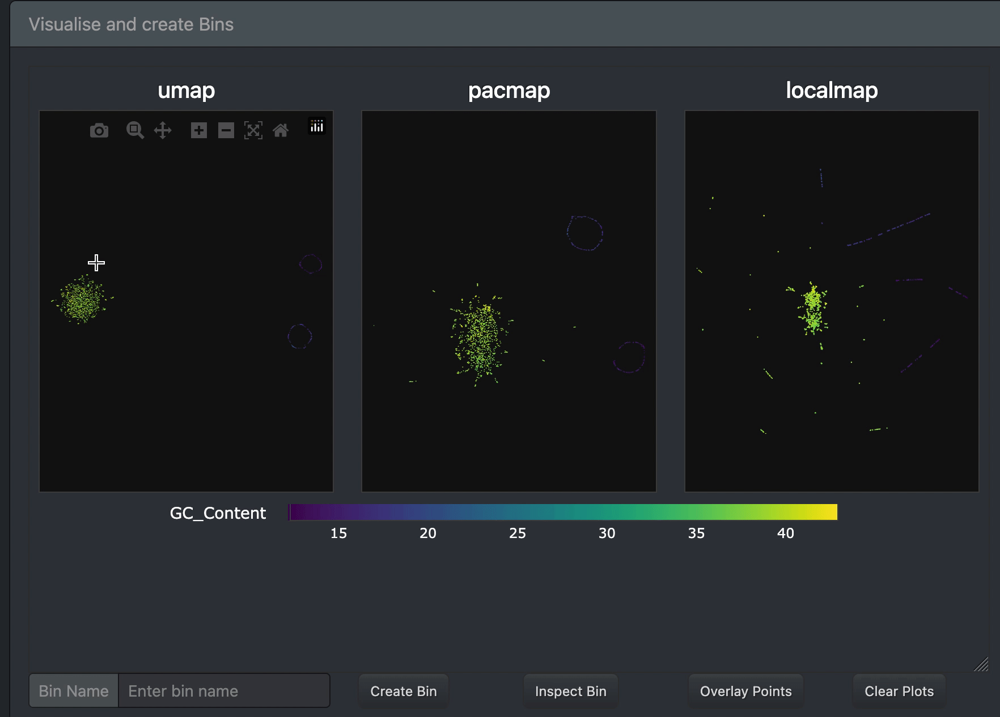

Visual binning (interactive)
Overview
The b2w interface is built with Dash and provides an interactive environment for exploring read embeddings and constructing bins using lasso-based selection.
It allows you to:
- explore structure in embeddings (UMAP, PCA, etc.)
- colour reads by features
- interactively select clusters
- export bins

Launching the interface
Start the app from the command line:
Example:
Then open in your browser:
Info
Looking for command-line options? See the CLI reference for kmer-ord bin.
Conceptual
Understanding the interface becomes much easier if you think in the following way:
- Each point → a read
- Coordinates → an embedding (UMAP, PCA, etc.)
- Colour → a feature (numeric or categorical)
- Lasso selection → a subset of reads
- Bin → a saved selection (polygon + filters + embedding)
What is a bin?
A bin is defined by: - a polygon (lasso selection) - a coordinate system - active filters
Tip
- Use multiple embeddings to validate clusters
- Overlay is extremely powerful for detecting contamination and assess selected point across embeddings
- Feature comparison often reveals hidden structure
Interface layout
Sidebar
Contains:
- feature selection
- filtering controls
Main panel
Contains:
- embedding plots
- binning controls
- bin list and inspection tools
Step 1 — Explore embeddings
Start by visualising your data:
- Select one or more coordinate systems (e.g. UMAP, LocalMAP, PaCMAP, PCA)
- Choose a feature to colour by (e.g. GC-content)
- Click Update plots
This will generate and show the requested plots in the main panel. Inspect the structure in your data and identify candidate clusters.
Step 2 — Compare features
Switch to feature comparison mode to help understand what drives structure.
- Select a single embedding (for example UMAP)
- Select multiple features (GC-content, k-mer evenness, Tiara predictions...)
- Click Update plots
Now each panel shows the same embedding coloured differently.
Tip
Use feature comparison mode to identify features that separate clusters — this is often the key to meaningful binning.
Step 3 — Filter the data (optional)
Filters restrict which reads are shown and which reads can be selected.
You can:
- set min/max values for numeric features
- select categories for categorical features
Filters affect everything
Only filter when intended
Filters apply to: - visualisation - lasso selection - bin creation - export
Tip
Filtering may be useful for high-coverage datasets (e.g. selecting only reads > 10 kb).
Step 4 — Inspect a selection
Before committing to a bin, inspect the selected reads:
- Use the lasso tool (top-right of a plot)
- Draw a selection around a cluster
- Click Inspect Bin
A table will show all selected reads and their features.
This is useful for:
- validating cluster purity
- checking feature distributions
Step 5 — Create a bin
Define a bin by selecting a cluster:
- Use the lasso tool (top-right of a plot)
- Draw a selection around a cluster
- Enter a bin name
- Click Create Bin
The bin will appear in the Bin List.
Success
Your bin now stores: - embedding used - polygon (lasso shape) - active filters
Step 6 — Validate across embeddings
Use Overlay points to check consistency:
- Lasso a cluster in one embedding
- Click Overlay points
The same reads will be highlighted across all plots.
Tip
This is one of the most powerful features: - confirms cluster stability - reveals contamination - increases confidence in bins
Step 7 — Reset the view
Use Clear plots to:
- remove overlays
- restore the last plotted state
This does not delete bins.
Step 8 — Export bins
When ready, export all bins:
- Click Export bins
For each bin, the following files are created:
<bin_name>.csv— table of reads and features<bin_name>.fastaor.fastq— sequences
FASTQ is written when quality scores are available.
Common pitfalls
Warning
- Only one lasso selection can be active at a time
- You must click Update plots after changing inputs
- Filters may unintentionally exclude reads
- Clearing plots does not remove bins
Practical tips
- Use feature comparison to identify meaningful splits
- Avoid filtering unless intended
- Use Overlay points to confirm clusters across embeddings
- Inspect selections before creating bins
Summary
The typical workflow is:
- Explore embeddings
- Compare features
- (Optionally) filter
- Lasso clusters
- Inspect selections
- Validate with overlays
- Create bins
- Export results
See also: